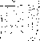
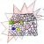

高年級生態旅遊路線
1烏牛欄教會 2水采田 3福壽宮 4茭白筍合作社 5無某崎 6副班長家、草地 7廢棄軍營 8醒靈寺
9埔里基督教醫院 10德芬堂 11舊崎仔 12陰陽界
13石頭厝 14竹編達人 15愛蘭國小、派出所 16肉粽
高年級路線全程約２公里，16個景點，建議以步行或腳踏車進行。
步行時，每個景點以平均停留5～10分鐘計，共需約3小時完成。
若以腳踏車進行，可在2.5小時內完成。